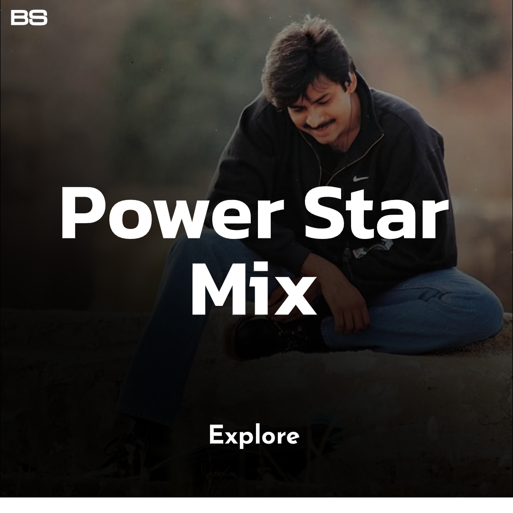
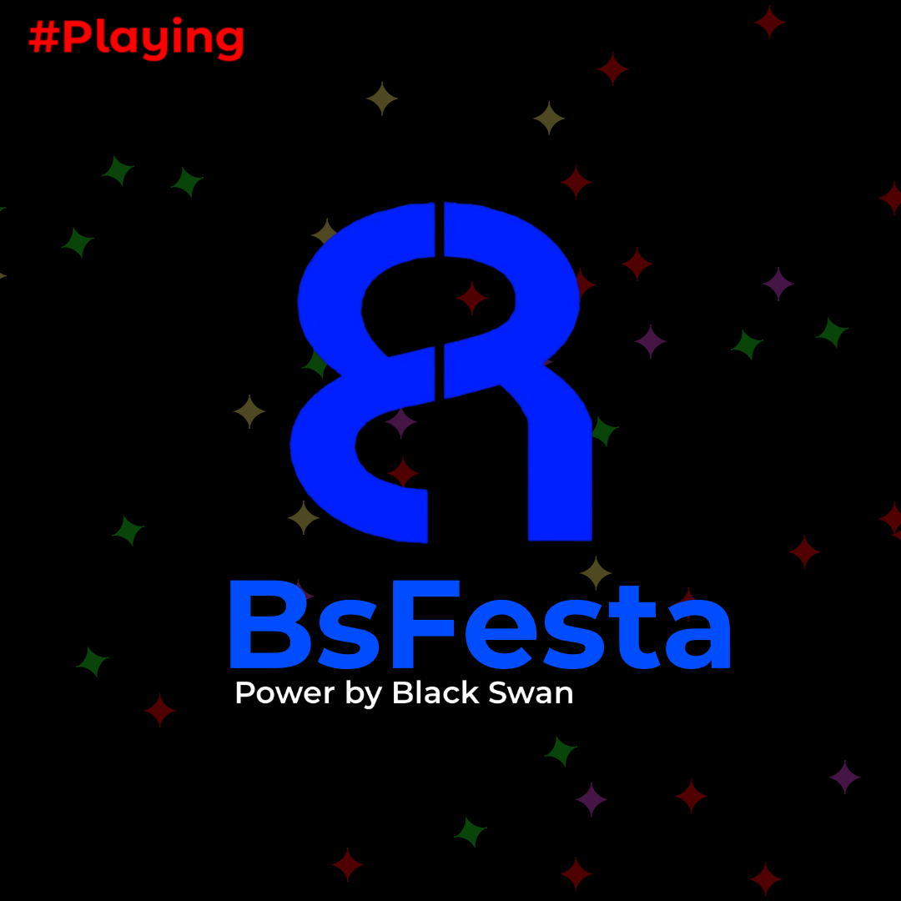

BsFesta
Home
More from Bs
About festa
 Power star mix
# Song name
Anukoneledhugaa
Ela Ela
Kshanam Kshanam
Panja
Paparayudu
Veyira Cheyyi
Amma Thale
Dochey
Maham Maye
Power Star
Aale Baale
Vayyarala
Chiguru Boniya
Sri Ganga
Barbie Bommaki
Gelupu Thalupule
Am Indian
Bangala Kathamlo
Vevela Mainala
Yey Chikitha
Inthe Inthinthe
Lokale Gelavaga
Athi Methani
Neelo Jarige
Kannu Kottina
Jai Shambo Shambo
Yegire Chilakamma
Ra Ra Bangaram
Maro Masti Maro
Ra Ra Bangaram Mix
Chedugudante
Annayya Annavante
Lucia
Neevalle Neevalle
Chalore Chalore Chal (Telugu)
Gaallo Thelinattunde
Jalsa
Jennifer Lopez
My Heart Is Beating (Remix)
My Heart Is Beating
You & I
Made In Andhra Student
Vayyari Bhama
Edola Vundi
Pedavi Datani Matokatundi
Travelling Soldier
Ee Manase Se
Yemaindo Yemo
Gagananiki
Chiguraku Chaatu
Chilakamma
Chitti Nadumune
Emantaro
Killi Killi
Le Le Le Le
Aaduvari Matalaku
Ammaye Sannaga
Cheliya Cheliya
Holi Holi
Premante
Ye Mera Jahan
Baitikochi Chuste
Gaali Vaaluga
Dhaga Dhagamaney
Swagatham Krishna
AB Yevaro Nee Baby
Kodakaa Koteswar Rao
Mira Mira Meesam
Laage Laage
Jivvu Jivvu
Emo Emo
Yelo Yedarilo Vaana
Love Theme
Netha Cheera
Akasam Ammayaithe
Dekho Dekho Gabbar Singh
Dil Se
Kevvu Keka
Mandu Baabulam
Pillaa
Aaradugula Bullettu
Ninnu Chudaganne
Deva Devam
Bapu Gari Bommo
Kirraaku
Time To Party
Katamarayuda
Aadevadanna Eedevadanna
Khakhee Chokka
Nee Chepakallu
O Pilla Shubhanalla
Sardaar
Tauba Tauba
Turn on the light
×
Your browser does not support the video tag.

Playing :
×
BsAdstoper